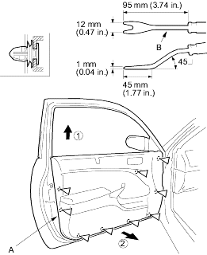
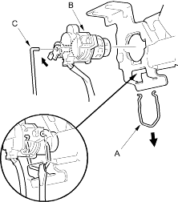
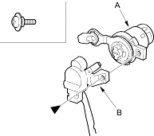

- Remove the mirror mount cover (see step 2 on page 20-16).
- Release the clips that hold the door panel (A) with a commercially available trim pad remover (B), then remove the door panel by pulling it upward. Remove the door panel with as little bending as possible to avoid creasing or breaking it.
Fastener Locations
 : Clip, 9
: Clip, 9

- Install the door panel in the reverse order of removal and note these items:
- Replace any damaged clips.
- Make sure the connectors are plugged in properly and the rod is connected properly.
NOTE: Put on gloves to protect your hands.
- Raise the glass fully.
- Remove these items:
- Door panel (see page 20-4)
- Plastic cover, as necessary
- Release the retainer clip (A), then remove the lock cylinder (B). Disconnect the cylinder rod (C).

- With cylinder switch: Remove the screw, then separate the lock cylinder (A) and cylinder switch (B).
Fastener Location
 : Screw, 1
: Screw, 1
